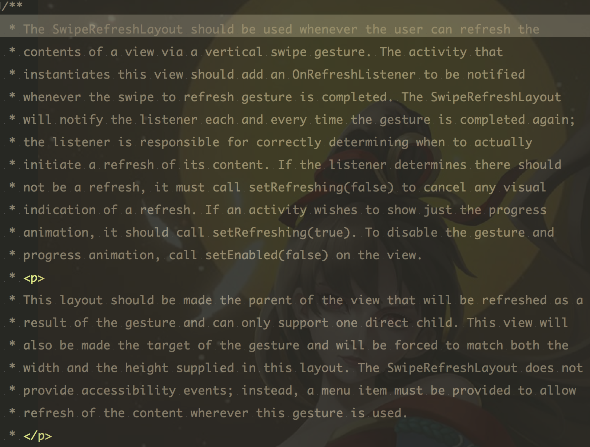
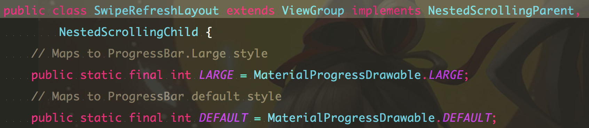
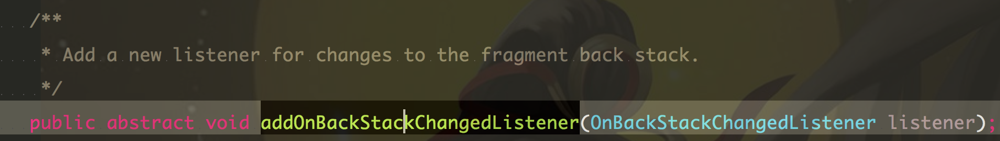

小的时候，父母老师等长辈们总是不厌其烦的唠叨着要用功读书，用功读书，颜如玉、黄金屋～ 搞的我很是反感，有股别人家孩子的味道。直到长大，不断的长大，我也不断的羡慕别人，羡慕别人的品味、谈吐、优雅的举止、自然的交际、甚至觉得别人生气都好应该啊～ 其实就是所谓的腹有诗书气自华吧（手动滑稽）
关于nexT Pisces主题设置不生效解决办法
发表于
正如你看到的，显示头像和个人欣喜的侧边栏一直在首页左边， 这时next 三个主题之一，当我从默认主题改成这个主题的时候，却怎么也不生效，侧边栏还是默认被隐藏着，而且只有多半个… 直到我看到别人的about 目录下的index.md 中有一个layout: post 属性，我试着加上以后突然好了… 喜欢别人的主题可以从底下显示hexo主题的地方点进去看看人家的主题配置… 实在看不懂就copy过来嘛…
读原生SwipeRefreshLayout源码
发表于
官方对该控件的描述

“当你通过垂方向的滑动手势来刷新内容的时候，你可以用这个控件，实例化这个控件的activity 需要添加一个（注意是add，增量逻辑） OnRefreshListenner 来监听刷新事件的完毕；当刷新手势结束后，控件会通知每一个add 过的监听，在监听回调方法中你可以刷新内容，当然如果内容刷新后，需要结束刷新动画，你需要调用swipeRefreshLayout.setRefreshing(false)来结束刷新动画，如果activity 想展示加载进度，可以调用swipeRefreshlayout.setRefreshing(true),如果想禁用滑动手势触发刷新动画，就调用setEnable（false）“
该控件需作为要刷新的控件的直接父View，且有且只能有一个子View，会拦截手势，而且会强行自适应这个子View。这个控件不提供任何对事件的操控操作，作为代替，当手势触发的时候一个菜单项会被提供来刷新内容“

不用看那头两个见名知意的成员属性。这个viewgroup继承了nestedScrollingParent和child ，记得去年我在hongyang公共号看到一篇文章，我先去回顾下…(我偶像还是值得信懒的😁)
Fragment
发表于
Attention
- 新建fragment 布局默认是透明的，能够透传点击事件，也就是说能够点到下层布局上的控件。通常我都是在xml加上一个背景色（当然不要加透明通道），一个clickable=true（或者让fragment拦截事件，都行），这样它会拦截所有事件。当然你也可以在BaseFragment当中把布局渲染回来设置这两项属性。
google 推荐不要用构造器传参，因为内存重启的时候，系统为你恢复fragment的时候不会调用你带参数的构造器，这样你的参数就会是null，调用参数的地方会是空指针。所以google推荐你使用setArguments来传值。
当你在一个跟布局为Linearlayout的Activity中add fragment的时候，fragment 不会覆盖全屏，只会根据LinearLayout的布局方向，add到最后或者右边（LinearLayout不具备层叠效果）；这时如果一定要add fragment的话，可以给LinearLayout外层套一个FrameLayout，fragment add 其上。
响应back键：如果能在Activity中获取到fragment 实例，那再简单不过了。说一种能不能都行的方法：
12345678@Override public void onBackPressed() {Fragment fragmentById = getFragmentManager().findFragmentById(android.R.id.content);if (!fragmentById.isRemoving()) {fragmentById.getFragmentManager().popBackStack();return;}super.onBackPressed();}是什么fragment 对应强转就行了。
fragment 移除的话直接在fragment 中调用 getFragmentManager().popBackStack();即可，而且这个方法有重载满足移除fragment的不同需求，可以点进去看下，这里不赘述。并且，fragmentManager还提供了这个方法

提供了一个fragment在stack发生变化时回调的方法123@Override public void onBackStackChanged() {}
Android开发资源汇总
发表于
开发路上的捡到的芝麻和西瓜
记录在开发过程中捡到的资源，有芝麻也有西瓜，敝帚自珍，好高骛远也要脚踏实地。
希望能为各位大佬的宝贵青春+1s～
在线工具：
- 在线生成icon： Generic icon generator
- 在线生成button：botton maker
- 在线生成各种shape：shape generator
- 代码模板（如：webview、解析json等）、IDE插件等资源： codota
- 图片优化平台(可转webp）：智图
- 图片优化平台：tinypng
- md 风格的颜色、icon和设计样式：materialpalette
- 通过快速配置（ide、compile lib等）能生成工程代码：androidkickstartr
- 图片格式在线转换aTool
各位大佬的资源集锦
- Trinea:
- 介绍Android开发工具和周边插件：MobDevGrop
- 全平台各种开发包（Studio、sdk、plugin等）：AndroidDevTools
- 号称github上Android 前100star流行库统计
各种使用指南
学习笔记系列
Android 相关的资讯网站
- 安卓巴士
- wan android( hongyang 偶像)
- Android 博客周刊
- Android cat
- gank IO (daimajia)
- 极客导航
- 开源实验室
- Stormzhang的博客
- gcssloop 的博客(自定义View系列）
- darkeet 的博客
- 开发技术前线
- 技术小黑屋
- jlog 的博客
- 泡在网上的日子
- 开源中国
- 农民伯伯博客
- 云在千峰Android 2016 开发资料
- gityuan
- 郭霖的博客
- 一叶飘舟
- 胡凯的博客
- 亓斌的博客
- 廖雪峰的网站
向这些帅逼博主们致敬！
UI控件系列
Icon
Chrome 工具
- chrome 在线工具箱：tool.lu